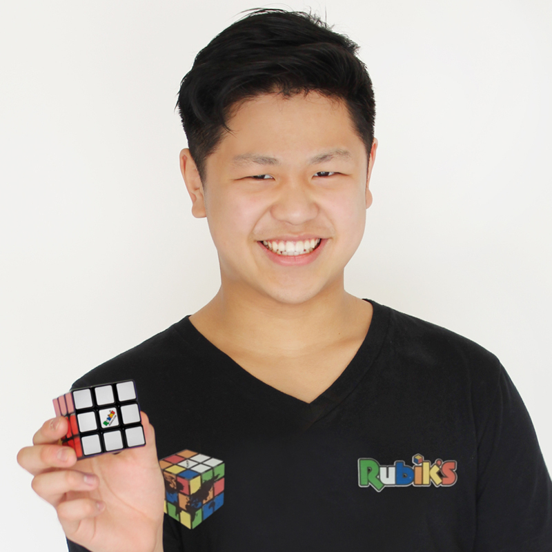

Seja Bem Vindo
Olá me chamo Keven e tive meu primeiro cubo em 2018, e aqui você vai conhecer desde a história do cubo mágico até dicas e metódos básicos e avançados e onde comprar seus cubos e quais cubos comprar.
História

Em 1974, um jovem professor de arquitetura de Budapeste (Hungria) chamado Ernő Rubik criou um objeto que não deveria ser possível. Mesmo após de ter sido girado, o cubo não quebrou ou desmontou. Com adesivos coloridos em suas faces, o cubo foi embaralhado e assim surgiu o primeiro “Cubo de Rubik”.

Cammpeonatos e Recordes
O Campeonato Mundial de Cubo Mágico (em inglês: World Rubik's Cube Championship) é o maior torneio de cubo mágico do mundo, e tem a chancela da WCA (World Cube Association). O primeiro campeonato aconteceu na cidade de Budapeste, no ano de 1982.Depois disso, o torneio voltou a acontecer em 2003.
De acordo com a organização Guinness World Records (GWR), ele quebrou o recorde resolvendo um cubo giratório 3x3x3 em apenas 3,13 segundos, 0,34 segundo a menos em relação ao tempo do chinês Yusheng Du, em 2018. Antes disso, o melhor tempo de Park era 3,63 segundos.